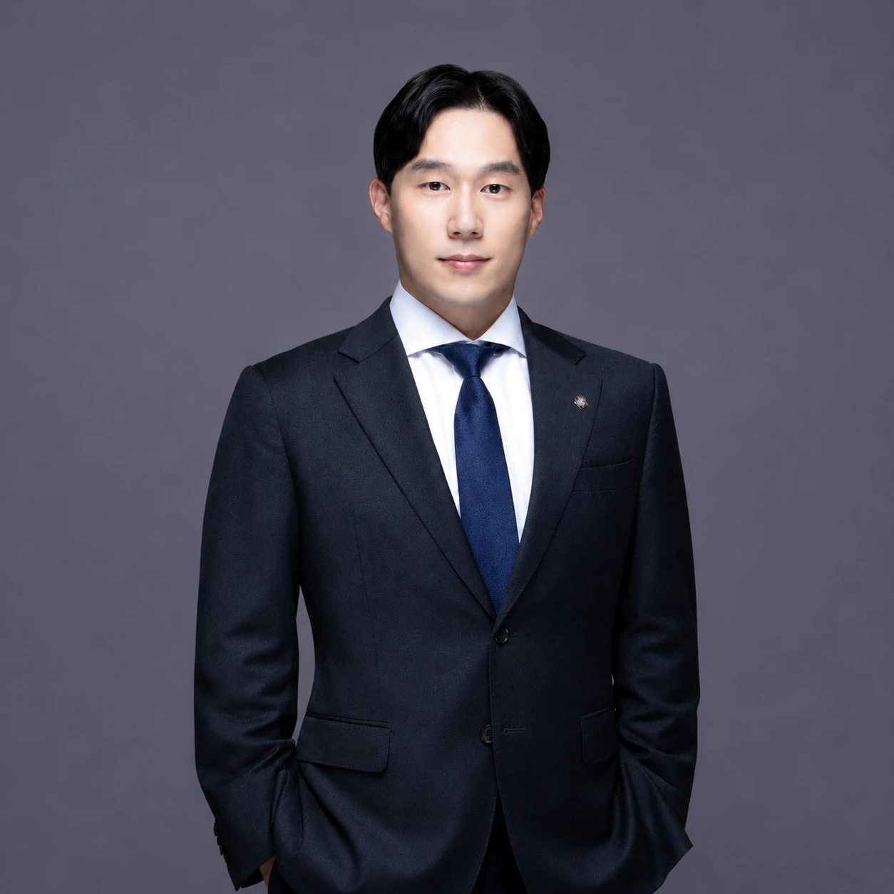

대표변호사 김준우 · 문호준 · 차현준 · 한석일
GREETING
대표 인사말
안녕하십니까. 법률사무소 준일 대표변호사 김준우, 문호준, 차현준, 한석일입니다.
작금의 법률시장에서는 다수의 법무법인이 오로지 매출 증진을 위해 상담, 수행 변호사를 분리해 운영하거나, 대형 법인으로 보이기 위해 사실은 내부적으로 각자 분리된 사업을 운영하고 사건에 관해 일절 검토하지 않으면서도 다수의 담당 변호사들을 형식적으로 지정해 놓는 경우가 부지기수입니다.
그러나, 성공적인 결과를 위해서는 1차 단계에서부터 수행 변호사가 직접 의뢰인과 상담을 진행하고, 이후 사건에 관해 모든 변호사가 면밀한 논의와 법률 검토를 통해 소송전략을 수립하고 이를 바탕으로 수행하는 것이 중요합니다.
의뢰인 한분, 한분의 고민에 귀 기울이고, 성실함과 정직함, 다양한 분야의 로펌에서 쌓은 전문성을 바탕으로, 모든 능력, 시간 그리고 가진 전부를 '올-인'하여 높은 법률서비스 그리고 성공적인 결과로 이끄는 것이 저희의 목표이자, 이러한 가치를 위해 법률사무소 준일을 설립하게 되었습니다.
모든 것을 쏟아붓는 든든한 조력자로서 언제나 의뢰인님 옆에서 함께 하겠습니다.
법률사무소 준일 올림.